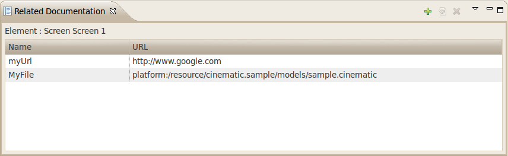
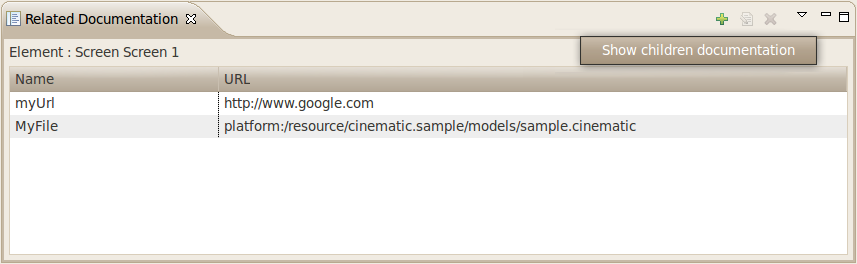
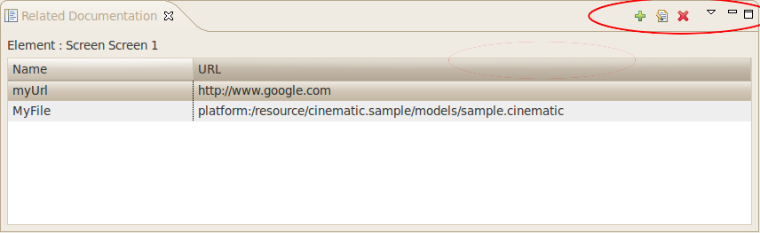
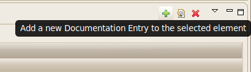
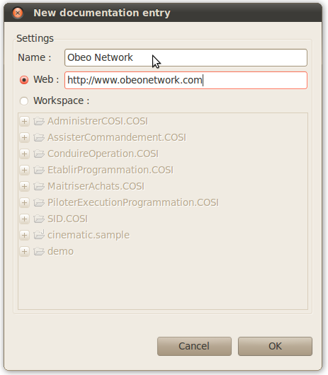
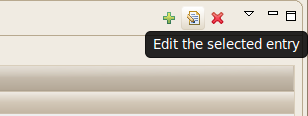
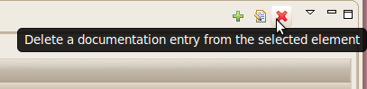
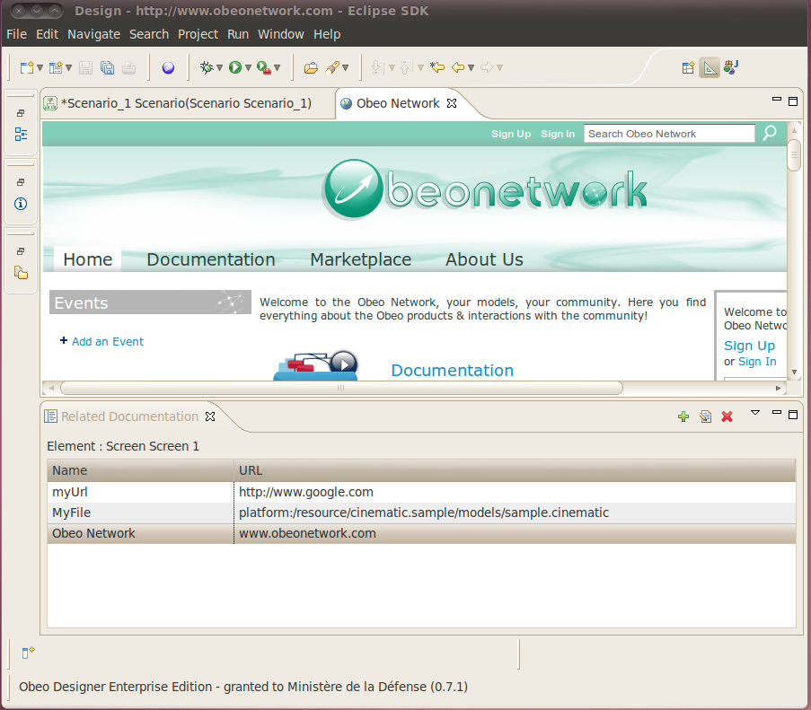

Copyright © 2008, 2022 Obeo - All rights reserved. This program and the accompanying materials are made available under the terms of the Eclipse Public License v1.0
Authors Goulwen Le Fur
Contact goulwen.lefur@obeo.fr
L' outillage de documentation du Network Obeo apporte un ensemble d’outils permettant d’associer de la documentation aux modèles édités via Obeo Designer. Il apporte une vue permettant l’ajout ou la suppression de liens de documentation sur les éléments de modèles.
La gestion de la documentation se fait via la vue Related Documentation. Son ouverture se fait via le menu :
Window > Show View > Other ... > Related Documentation (Catégorie Obeo Designer for IS)

La vue est composée d’un tableau affichant toutes les entrées de documentation liées à l'élément actuellement sélectionné dans Obeo Designer. La vue peut également présenter les liens de documentation des éléments contenus par la sélection actuelle. L’activation de cette fonctionnalité se fait via l’action «Show Children Documentation» dans le menu de la vue.

La vue comporte également trois actions permettant d’ajouter, d'éditer ou de supprimer un lien de documentation.

La première action de la vue permet d’ajouter des liens de documentation sur l'élément sélectionné.

Une fois lancée, l’action ouvre une boîte de dialogue permettant de saisir le nom du lien ainsi que sa référence. La référence peut être un lien web ou un fichier dans le network.

La deuxième action réouvre la boite d'édition de lien afin de pouvoir modifier des informations sur un lien.

La troisième action permet finalement de supprimer un ou plusieurs liens de l'élément.

En lançant cette action, toutes les entrées sélectionnées dans la vue seront retirées de l'élément. Une boîte de confirmation s’ouvre de façon à éviter toute erreur de manipulation.
Il est possible d’ouvrir la documentation depuis la vue Related Documentation. Un double clic sur une entrée ouvrira :
